HTML Website MakerОбщественный деятель, учёный, писатель, журналист.
Предводитель якутской интеллигенции начала XX века,
организатор политической организации «Союз якутов»,
один из зачинателей якутской литературы и театра.
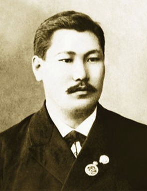
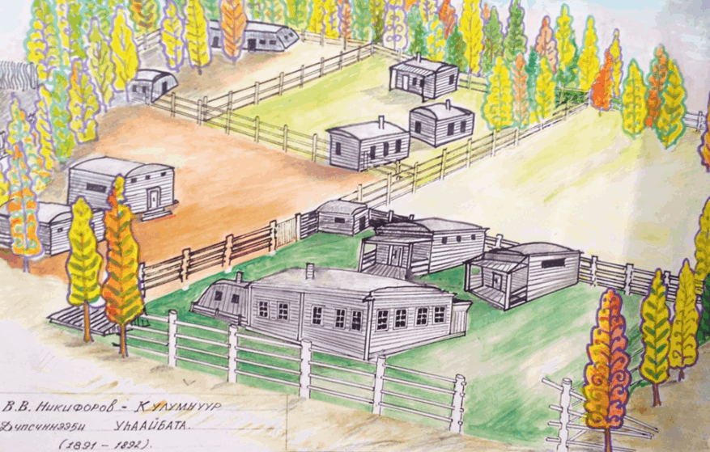
Родился 18 мая 1866 года в Тэбикском наслеге Дюпсюнского улуса Якутской области (ныне Оспёхский 1-й наслег, Усть-Алданский улус, Республика Саха (Якутия)).
Отец, Василий Игнатьевич Никифоров, родом из Нёмюгюнского наслега Хангаласского улуса. Окончив 2-й класс Приходского училища в Якутске, в 1844 году он был назначен писарем в Дюпсюнский улус. Оказался очень хорошим писарем. Он умер в возрасте 43 лет,
когда его сыну Васе было 3 года.
Мать, Елена Федоровна Охлопкова, родом из Наяхинского наслега. У Никифоровых родилось 7 детей: Константин (1848 г. р.), Иван — Акы Уйбаанчык (1850 г. р.), Петр — Малтыыкап (1854 г. р.), Ксения (1856 г. р.), Евдокия (1857 г. р.), Анна (1858 г. р.), Василий — Бааһа (1866 г. р.).
Мать, оставшись одна с множеством детей, вышла замуж за писаря Дюпсюнского улуса Даниила Федоровича Охлопкого.
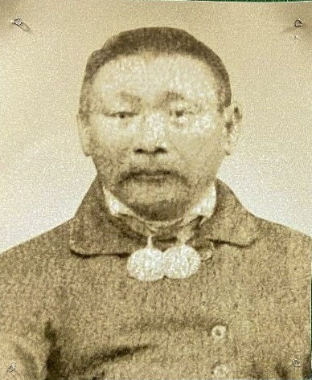
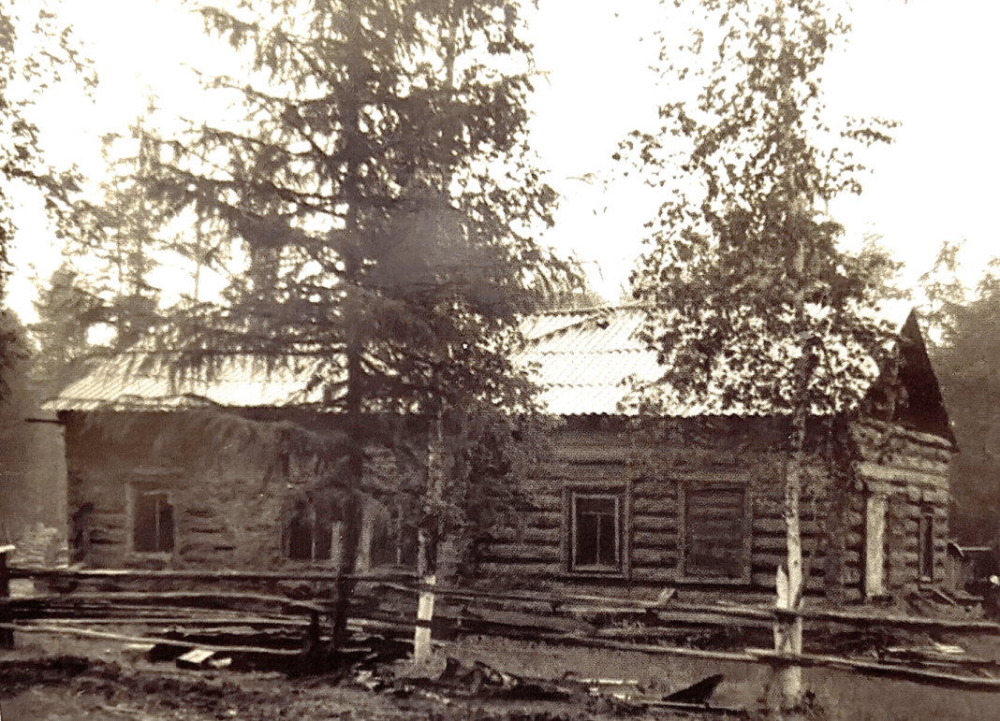
На фото, дом В.В. Никифорова в Тэбикском наслеге Дюпсюнского улуса, 1996 год.
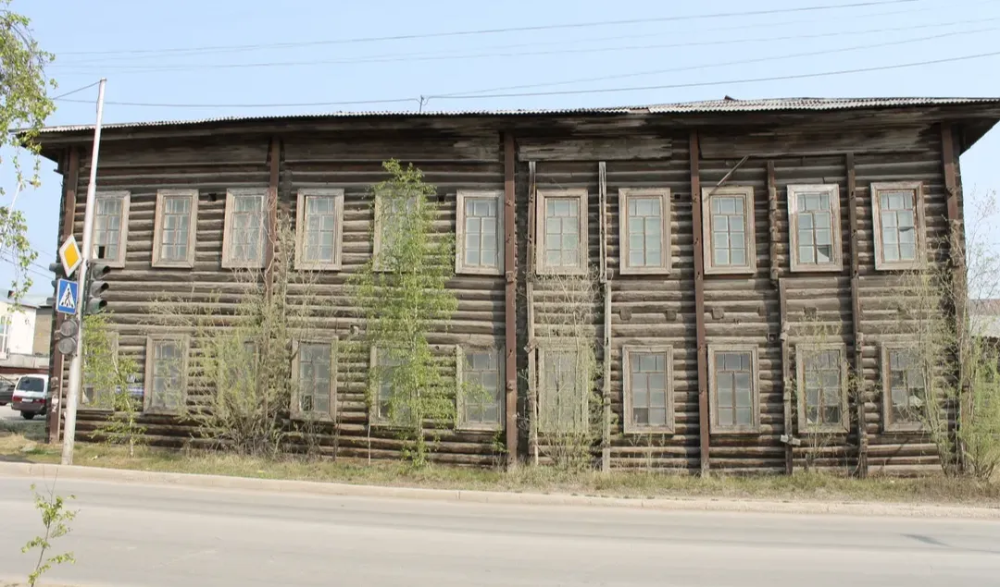
При содействии каракозовца Н.П. Страндена получил среднее образование, затем окончил Якутскую шестиклассную прогимназию, получил заочное юридическое образование. Во время учебы в Якутске общался с политическими ссыльными, посещал кружок известного революционера-народника Подбельского.
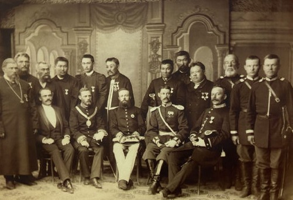
С 1890 г. был головой Дюпсюнского улуса, построил 2-х классную школу. Был постоянным попечителем этой школы. Много сил приложил созданию краеведческого музея и публичной библиотеки.
1891 г. — в составе якутской депутации в г. Иркутске принят наследником Российского престола цесаревичем Николаем Романовым.
В 1894-1896 годах Василий Никифоров участвовал в знаменитой Сибиряковской экспедиции, в которой работали пятнадцать политссыльных и четверо якутских интеллигентов. Во время экспедиции он еще больше сблизился с политиссыльными Ф.Я. Коном, Э.К. Пекарским, Л.Г. Левенталом, С.В. Ястремским, В.Г. Тан-Богоразом, Г.М. Осмоловским, И.И. Майновым, В.Е. Гариновичем.
По итогам работы в экспедиции Никифоров написал монографию «Семейный быт якутов», объемом 20 печатных листов. К сожалению, эта работа до сих пор не найдена.
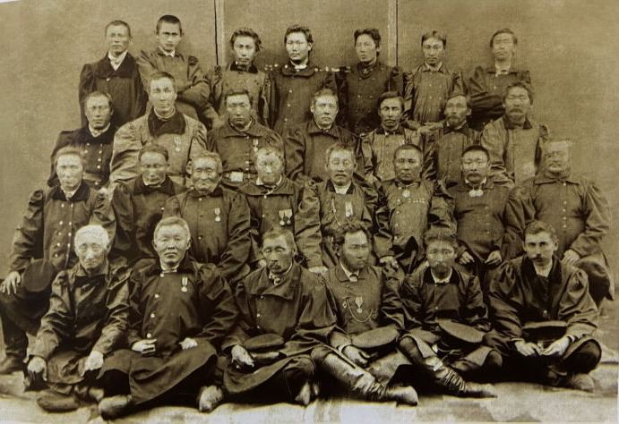
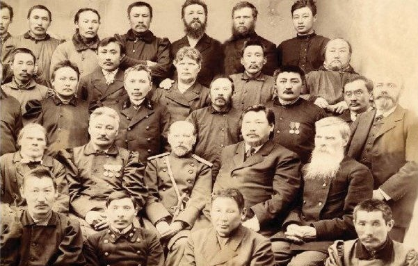
1896 г. — участвует во Всероссийской художественной и промышленной выставке в Нижнем Новгороде. 1897-1906 гг. — помощник секретаря, присяжный поверенный Якутского окружного суда.
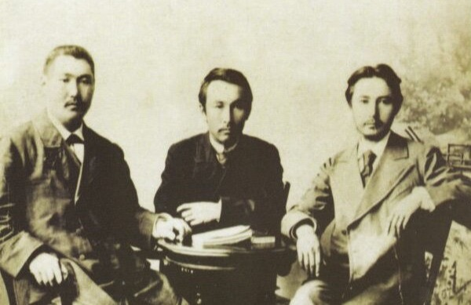
1904 г. — организует I съезд представителей органов якутского самоуправления.
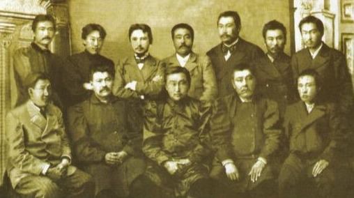
«...в конце прошлого столетия образовался кружок якутов, который поставил своей задачей вести пропаганду среди якутов о создании своей письменности и своей литературы. Дело началось с открытия бесплатных бибюлиотек-читален...
Под видом привлечения наибольшего внимания населения к этим читальням, увлечения их средств и т.д....Читались доклады и устраивались чтения на якутском языке, делались переводы популярных брошюр».
В.В. Никифоров
Под влиянием революции 1905 г. он организует антиколониальный «Союз якутов», за организацию которого осужден к одному году шести месяцам тюрьмы.
1907 г. — сотрудничает в местных прогрессивных газетах, занимается проблемами начального образования, работает в Якутском отделе Общества по изучению Урала, Сибири и Дальнего Востока.
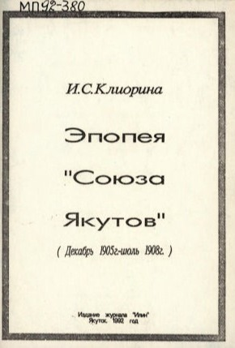
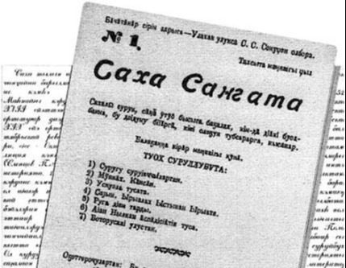
1 сентября 1912 г. вышел в свет журнал «Саха саҥата». В.В. Никифоров стал организатором и издателем первого якутского журнала. В нем публиковались произведения первых талантливых якутских писателей и поэтов: А.И. Софронова, А.Е. Кулаковского, Н.Д. Неустроева.
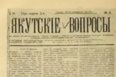
В 1915 г. начала издаваться газета «Якутские вопросы» с материалами на якутском языке. Как писал В.В. Никифоров, он стал издавать газету, «чувствуя властное наступление революционного переворота, с целью подготовить якутский народ к новому строю».
1917 г. — председатель Якутского трудового союза федералистов.
1918 г. — после февральской революции 1917 г. В. Никифоров создает Якутское областное земство под своим председательством. Проводит съезд инородцев Якутской области, принимает участие во Всероссийском съезде по народному образованию.
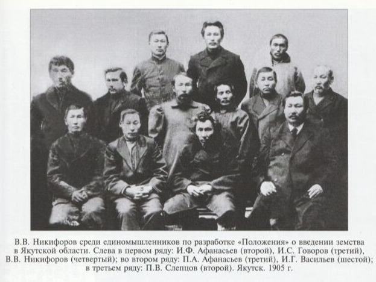
1919 г. — член Государственного экономического Совещания при Верховном правителе А.В. Колчаке.
1924 г. — делегат Дальневосточного съезда по районированию в Чите, председатель редколлегии Якутской секции в Центральном издательстве народов СССР, организует якутский отдел в Центральном музее народоведения в г. Москве.
1926–1927 гг. — участвует в работе Якутской комиссии АН СССР по изучению Якутской АССР.
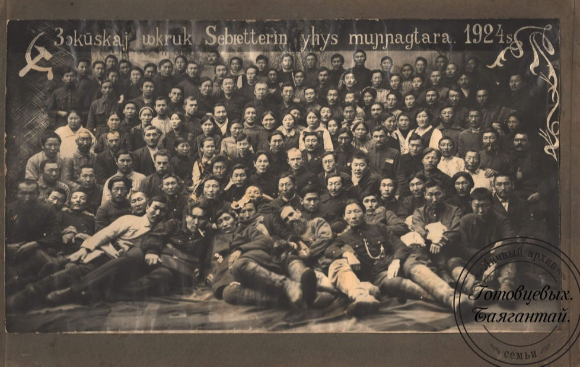
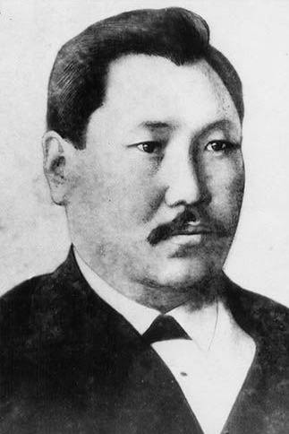
19 сентября 1927 г. — был арестован, приговорен к высшей мере наказания с заменой на 10 лет лагеря.
Умер 15 сентября 1928 г. в тюремной больнице г. Новосибирска. Реабилитирован заключением Военной прокуратуры Забайкальского Военного округа от 3 февраля 1992 г.
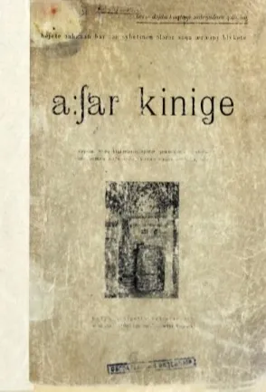
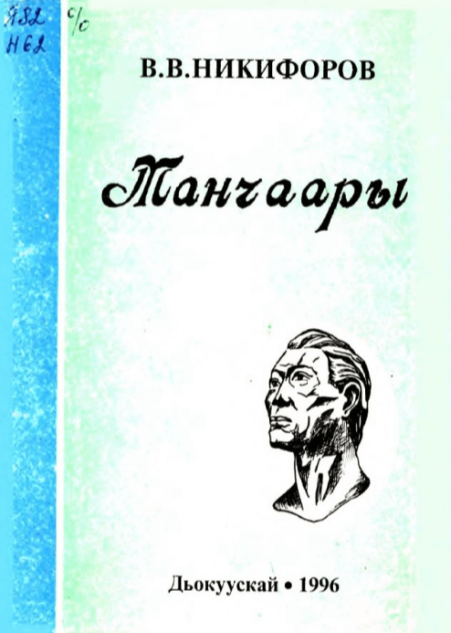
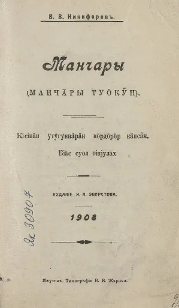
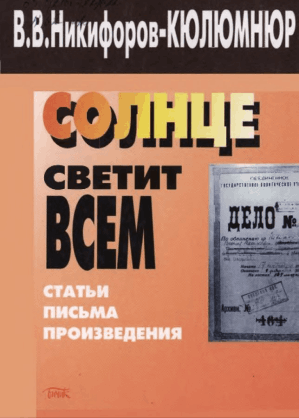
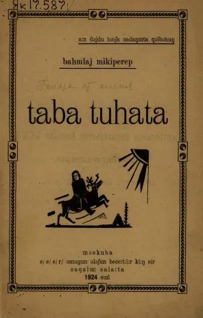
Таба туһата / Баһылай Микииперэп. - Москуба : СССР омугун олоҕун бэчээттиир киин сир сахалыы салаата, 1924. - 35, [1] с.
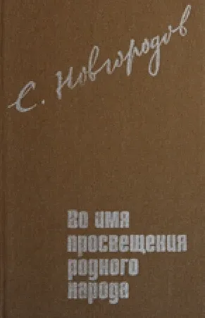
Во имя просвещения родного народа : соч., переписка, материалы / С. А. Новгородов ; Акад. наук. СССР, Сиб. отд-ние, Якут. ин-т яз., лит, и истории. - Якутск : Якут. кн. изд-во, 1991. - 230, [1] с.
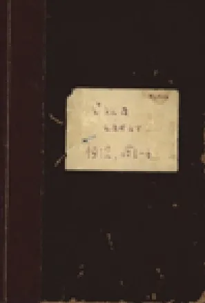
Саха саҥата : "Саха"-диэн ааттаах суругу-хаһыаты оҥорорго холбоспут дьон ; [ред. Д. М. Никифоров]. - Якутск : Типография газеты "Якутская окраина", 1912-1913.
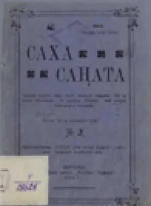
Саха саҥата: " Саха"-диэн ааттаах суругу-хаһыаты оҥорорго холбоспут дьон ; [ред. Д. М. Никифоров]. - Якутск : Типография газеты "Якутская окраина", 1912-1913.
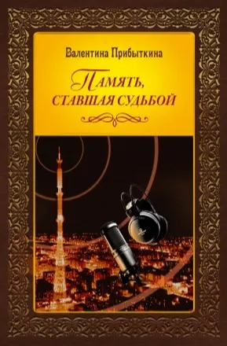
Прибыткина, Валентина Васильевна.
Память, ставшая судьбой / В. В. Прибыткина ; составитель А. В. Кондратьева. - Санкт-Петербург : Нестор-История, 2020. - 375 с., [16] л. ил.
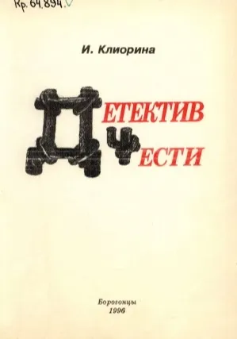
Клиорина, Ираида Самоновна.
Детектив чести. Поднятие завесы тайны / И. Клиорина. - Борогонцы : [б. и.], 1996. - 50, [1] с.
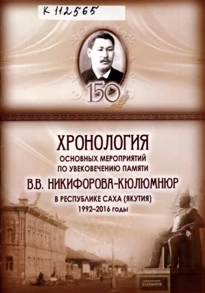
Хронология основных мероприятий по увековечению памяти В. В. Никифорова-Кюлюмнюр в Республике Саха (Якутия), 1992-2016 годы. - [Якутск : б.и., 2016]. - 11 с.
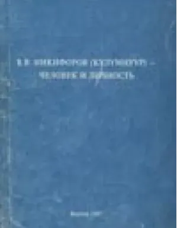
В. В. Никифоров (Күлүмнүүр) - человек и личность / [редкол.: д. филол. н. П. А. Слепцов, к. филол. н. И. Г. Спиридонов (отв. ред.), к. филол. н. Н. З. Копырин]. - Якутск: ИГИ АН РС(Я), 1997. - 165 с.
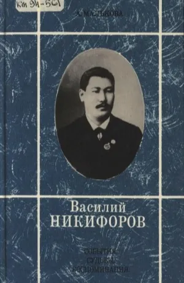
Клиорина, Ираида Самоновна Василий Никифоров : События. Судьбы. Воспоминания / А. Малькова. - Якутск : Бичик, 1994. - 269, [3] с.
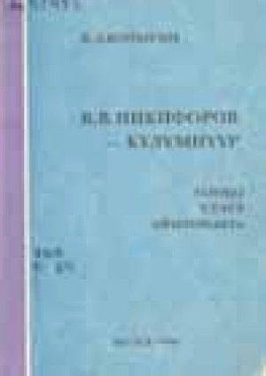
Копырин, Николай Захарович. В. В. Никифоров-Күлүмнүүр : (олоҕо, үлэтэ, айымньыта) . - Дьокуускай : [и. с.], 1996. - 185, [10] с.
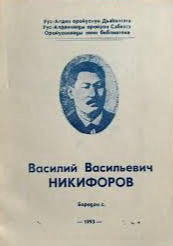
Василий Васильевич Никифоров / Уус-Алдан оройуонун Дьаһалтата, Уус-Алданнаҕы оройуон Сэбиэтэ, Оройуоннааҕы киин б-ка ; [хомуйан оҥордо З. В. Мигалкина]. - Бороҕон : [б. и.], 1993. - 34 с.
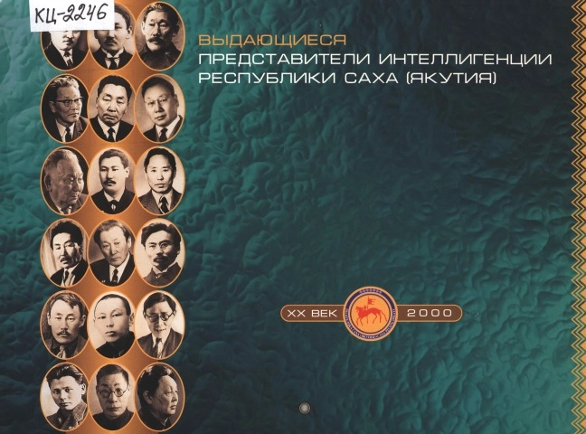
Выдающиеся представители интеллигенции Республики Саха (Якутия) : [календарь / Якут. междунар. ун-т в Москве ; сост.: О. Сидоров, И. Ушницкий]. - Москва : Якутский международный университет, 2000. - [43 с.]
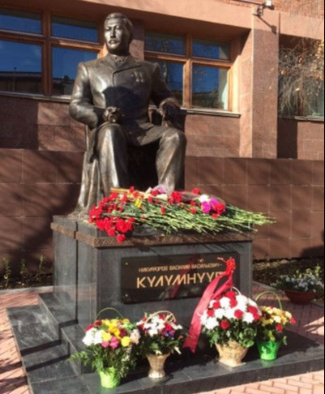
Память
- Законом Республики Саха (Якутия) от 15 июня 2004 г. 135/1-З № 275-III «О государственных наградах Республики Саха (Якутия)», учреждена Государственная премия Республики Саха (Якутия) в области журналистики имени В.В. Никифорова-Кюлюмнюр.
- В 2006 г., к 140-летию В. Никифорова-Кюлюмнюр, Саха академический театр имени П.А. Ойунского поставил спектакль «Восхождение Первого» по пьесе В. Васильева-Харысхалa.
- В 2009 г. в Якутске на здании Национальной библиотеки установлена мемориальная доска.
- В 2016 г. – крупному алмазу весом 121,96 карат, добытому на фабрике №14 Айхальского горно-обогатительного комбината, присвоено имя В.В. Никифорова-Кюлюмнюр.
- Издательским центром «Марка» выпущена почтовая карточка к 150-летию В.В. Никифорова-Кюлюмнюр.
- 27 сент. 2016 г., в День государственности Якутии и в честь 150-летия писателя, у здания Государственного Собрания (Ил Түмэн) установлен памятник В.В. Никифорову-Кюлюмнюру.
https://keskil14.ru/s-sahany-rden-t-rt-sahany-t-lk-l-n-vasilij-vasilevich-nikiforov-k-l-mn-r-t-r-b-te-160-sylygar-anallaah-r-sp-b-l-ketee-i-viktorina/
HTML Website Maker